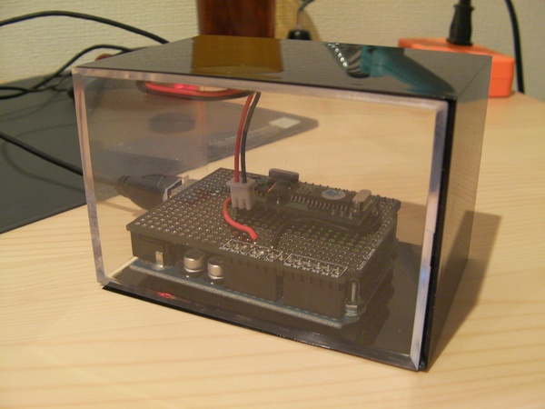
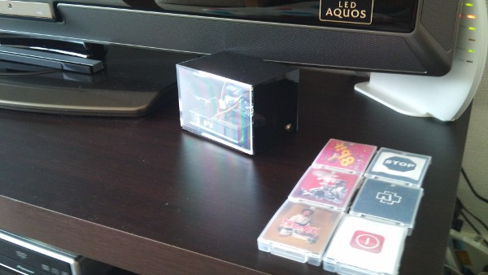
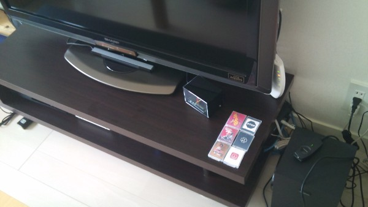
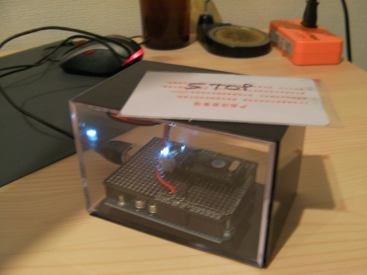
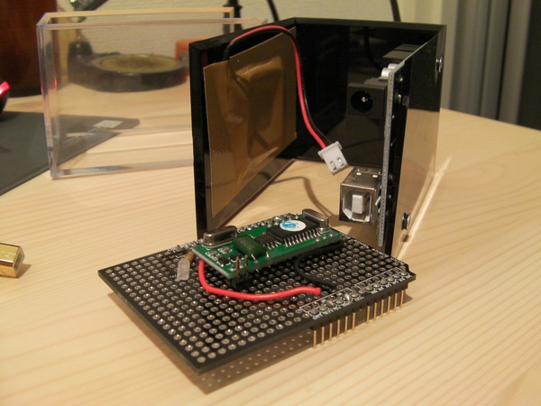
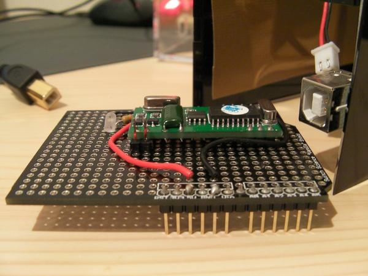
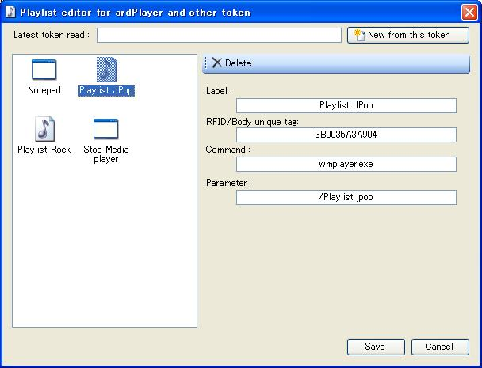

Purpose
Why why why oh why ?

So nice to play music without turning on the screen and opening WMPlayer and picking tunes ... especially if the screen of the PC is in fact my big fat LCD TV (which I love). Just put some token on the sensitive area and music starts, remove it and it stops, or even drop the killer tokens that will shutdown the pc (damn small hard to press button beneath the table). Oh and also because I'm a curious geek in search of new toyes, yeah (but it was obvious).
Hall of fame:


Important foreword
Please note that this project is based and very strongly inspired (who said "plagiat"?) from the very nice work made here : http://www.trileet.com/node/34
The guy made a very nice work, and all the benefit of the idea is for him only. Thanks for sharing mate.
Main differences will be :
- No Squeezebox involved, it will be plugged to the PC that sits in the living room which is my goal (opposite of the original project)
- ... therefore no need for Ethernet shield or connectivity, we'll use the USB cable
- ... therefore we'll pilot the Windows Media player or whatever other tool (I'll try to have something that can run any command, even shutdown pc maybe ...)
- Everything will be written in C#
- It won't play albums but playlists (I barely never listen to an album)
- It will use an Arduino; not a difference, but since I need the USB connection, I have to. I would have prefered saving it and making a homemade arduino but can't win all time.
- I won't use the Parallax items (expensive and looks like having a not-so-fine review), I'll go to the SeeedStudio solution
- Cheaper 12.5 USD for a serial reader (vs 40 USD)
- Cheper 2.5 USD set of 5 tokens (2 card, 3 key holders) (vs 2 USD per item)
- Located in HK so not far from me and having free sending fees over 50 USD (my case)
Parts
- Arduino 3200 JPY
- RFID reader 1100 JPY (12.5 usd)
- RFID tokens 300 JPY (per 5)
- Some holders for the tokens ("in the 100 yen shop down the street we trust") or some recycled 100 jpy NES/SNES cartridge?
- Case from Tokyu Hands 515 JPY
- Vanilla shield from Switch-Science 600 JPY
Pictures
 

|  |
| Playlist editor in ardTouch Connector |
Schema
Text mode :
- RFID token Pin TX connected to Pin 2 of Arduino
- Led %20 470 Ohm resistor on Pin 12
- %20 Vcc and Ground (but you guessed this one)
Code
Arduino side
No real fantastic thing here.
You will need the
NewSoftSerial library available here
http://arduiniana.org/libraries/newsoftserial/ (used to communicate between RFID reader and Arduino).
It uses the
ARCPO library I wrote so feel free to use also.
RFID_PlayerToken.pde
PC side
It will use my previously created library
ARCPO and the Windows software associated
ardTouchConnector.
Changes to be done to the
ardTouchConnector :
- Can understand those new ID commands (should be nearly ok already)
- Can start WMPLayer if not loaded
- Can shutdown PC
Windows Media Player
Links